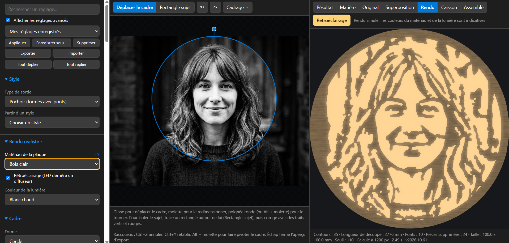

Trame par point, ligne et Low Poly
Transforme tes images en motifs artistiques géométriques prêts pour la gravure laser.
- Trame point et ligne : conversion de nuances de gris en motifs tramés géométriques.
- Effet Low Poly : réduction vectorielle en polygones artistiques stylisés.